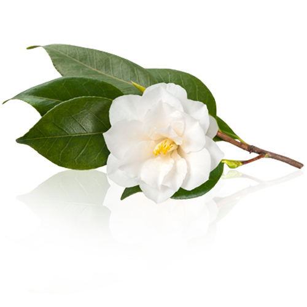
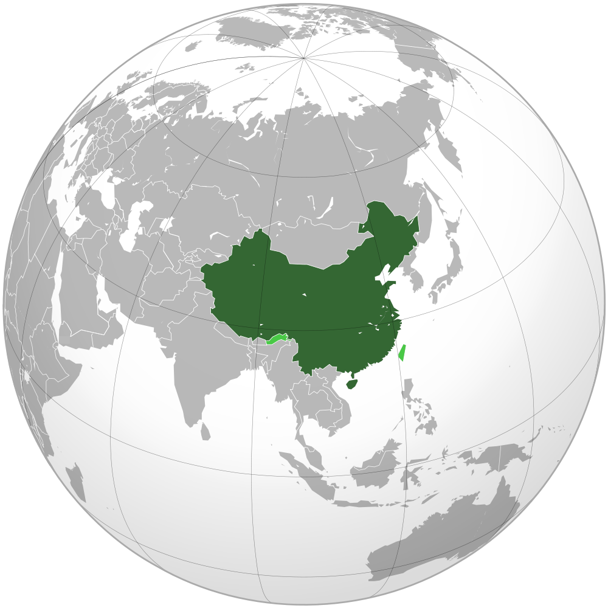
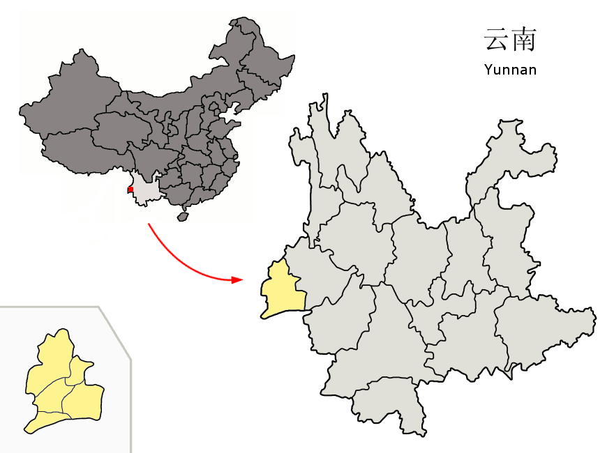
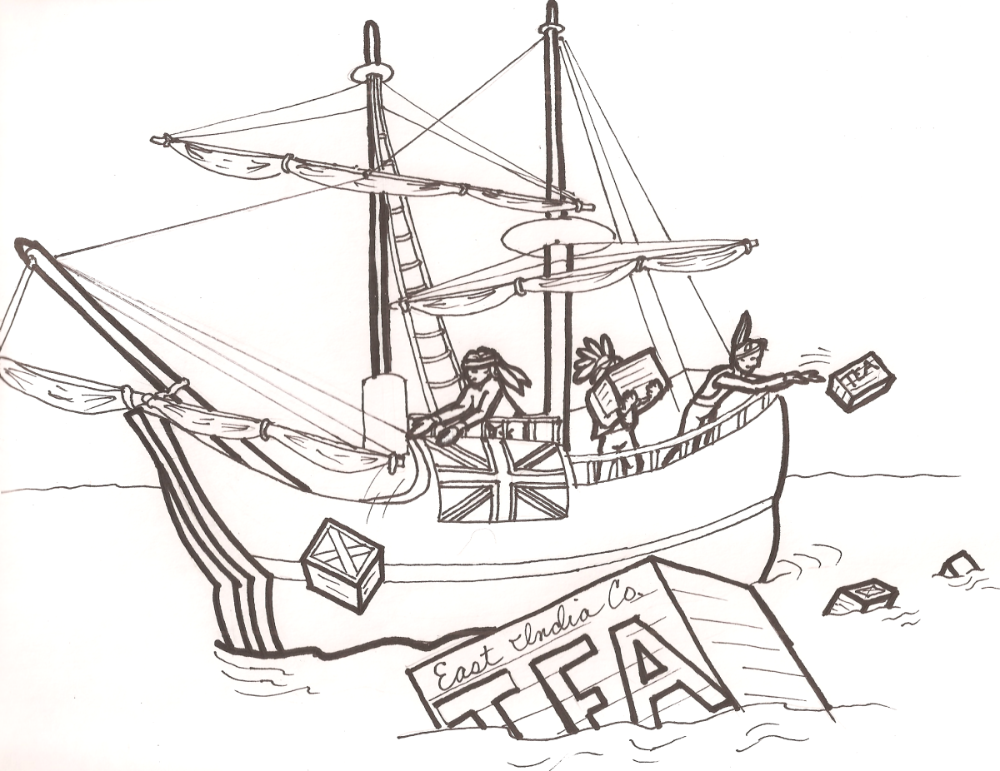
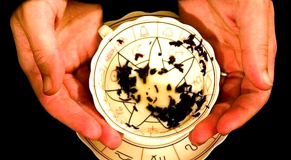
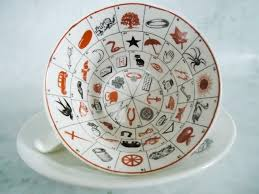

Camillia Sinensis (White Tea) Extract by unkown ,
courtesy of Royal Derma
Tea is a drink that is traditionally made using the Camellia Sinensis plant, native to Asia. It is made by pouring hot water (the temperature varying depending on the tea) over the cured leaves of the plant. The flavour of the tea can vary largely depending on how it is made and what it is combined with. It can have flavours ranging from bitter to sweet, along with nutty, fruity, floral, grassy, etcetera.
If you noted how I said 'traditionally' above, you'd be a smart one. Over the years, tea has developed rapidly, to the point where even the definition of the word 'tea' is in question.
This is only a tidbit of information to be found on this website, and the only way to find out more is to keep reading! Please enjoy as you browse the history, uses and types of tea, along with so much more!

China - Map Locator by Bos, Carole,
courtesy of Awesome Stories
Tea was originally made in China, used for it's believed healing properties. It later became a recreational drink and started becoming more popular across the other east Asian countries. It became popular in Britain during the 17th century, where they tried to bypass the Chinese monopoly over the product away.
In terms of how tea drinking began, there are many theories.
It could have begun with a medicinal use, in the Yunnan Region in China during the Shang Dynasty. In the province of Sichuan, it is commonly believed that the premier of tea drinking was actually for stimulus rather than medicine. Rather than being prepared with other herbs, it was boiled by itself, making it bitter and far more concentrated.
Tea was initially invented by Shennong in 2737 BC according to Chinese legends. Not to mention that, although there is evidence that it originated from the southwest of China, the earliest records of tea come from the country itself.

Location of Dehong Prefecture within Yunnan
(China) by Croquant, courtesy of Wikimedia Commons
However, written evidence isn't quite as stone solid as physical evidence. The earliest bit of physical evidence is from 2nd century BC, which show signs of the emperors of the Han dynasty drinking tea from the Camellia plant. The first indication of the process of boiling tea appears in the Han dynasty work 'the contract of youth', written by Wang Bao in 59 BC, in which it is stated that the youth should boil tea, as well as buy tea at Wuyang.
Speaking of 59 BC, it is around this time that the first evidence of tea cultivation is brought back to. It was cultivated on Meng Mountain. Other reliable evidence comes from the pen of Hua Tao in the fourth century AD, who said (kind of) that drinking tea makes people 'think better'. Tea drinking mainly took place in Southern China until the mid–8th century Tang dynasty, when it made it's way to Korea, Japan, and Vietnam.
While it was mainly recorded in China, the tea drinking practice had been around for long periods of time in India as well, though there is less evidence. It was also mainly drunk for medicinal purposes, not used as a beverage until it was introduced as such by the British many years later.
Of course, the history of tea is expansive, as there are many different parts of the world which have influenced it, so I will just give you a brief overview.
The first English record was in 1615 from a letter written by Richard Wickham. It was later sold in shops around London but was not notably popular in Britain until the 18th century, and was rather expensive until later that century when smuggling allowed it to be more accessible to the public. It was then people started adding things to the tea to adjust the flavour, such as milk and sugar. This was mainly for black tea, which overtook green tea in popularity in the 1720's. After the large increase in supply in the 19th century, tea became a drink that was affordable for all classes and was a common sight in households.

Boston Tea Party Drawings by ms toni mcdonalid,
courtesy of ClipartFest
Tea also influenced many historical events, such as the Boston Tea Party (and therefore the American Revolution).
With these many different people preparing it, many different means of making tea were developed. Over time, these have turned into the ones we primarily use today. For example, oolong tea was developed in the 15th century, where the leaves were only partially oxidized. It the more western areas of the world, the more oxidized black tea was far more likely to be in a household. Yellow tea was a happy accident that happened while green tea was being produced. The leaves turned yellow and then produced a different flavour.
Fortune telling with tea leaves isn't a common practice, but it's a fun one.

Reading tea leaves by unknown,
courtesy of Fortune Telling HQ
The people involved are called the fortune teller and the consultant (the person getting their fortune told). It's done by boiling uncontained tea leaves, drinking most of the tea, but leaving a little water at the bottom. The sitter holds the boiled cup of tea in their left hand and twirls the contents three times. This is so that the leaves stick to the sides of the cup and the fortune can be read. The cup is then flipped upside down on the saucer for the water to drain slowly. Then, if the sitter is serious about getting their fortune read, the leaves will dclump over images that the fortune teller can then read.
The parts of the cup represent different things. The handle is considered the ‘south’ point on the compass, and it represents the sitter and assigns the different aspects of their life. The rim is the present, the sides are the near future, and the bottom it the distant future. The closeness of the tea leaves to the handle depicts how completely the events take place.
Symbols Meanings

Rare Fortune Telling Tea Cups and Saucers
by SwirlingOrangell, courtesy of Etsy
.png){kind=link}